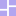

Arboriculture is the practice of growing and tending trees on purpose: pruning, grafting, choosing what to plant where. Last lesson built one behavior tree and walked through how it ticks; this one is about the craft of building trees that stay easy to grow, read, and reuse as they get bigger, using two more pieces from the same demo project: decorators and the blackboard.
Decorator
wraps one child
Inverter
flips the result
Succeeder
always reports SUCCESS
Failer
always reports FAILURE
Runner
always reports RUNNING

Blackboard
shared memory
Part 1. Decorators: One Child, Reinterpreted
A decorator is a node with exactly one child that changes how that child's result gets reported, without changing what the child itself does:
bt_node_deco.gdGDScript
extends BehaviorTree_Node
class_name BehaviorTree_Node_Decorator
func _ready():
if get_child_count() == 0:
print("Error! Behavior tree decorator does not have a child")
elif get_child_count() > 1:
print("Error! Behavior tree decorator has too many children")
bt_node_deco_inverter.gdGDScript
extends BehaviorTree_Node_Decorator
class_name BehaviorTree_Node_Decorator_Inverter
var INVERT = {
SUCCESS : FAILURE,
FAILURE : SUCCESS,
RUNNING : RUNNING,
}
func tick(actor, blackboard, delta):
var response = get_child(0).tick(actor, blackboard, delta)
if response in INVERT.keys():
return INVERT[response]
return FAILURE
Inverter is the whole pattern in miniature: tick the one child, look up its answer in INVERT, hand back the opposite. SUCCESS becomes FAILURE and back, RUNNING passes through unchanged (there's no sensible "opposite" of still-in-progress). The child node itself never finds out it's being inverted; it ticks exactly the same as it would anywhere else in the tree.
The other three decorators are blunter. A Succeeder, a Failer, and a Runner tick their one child, then report SUCCESS, FAILURE, or RUNNING no matter what it said. That's lying on purpose: it makes a step optional (Succeeder), switches a branch off without deleting it (Failer), or keeps a tree busy (Runner). Part 5 uses all four.
Part 2. The Payoff: Reusing a Checker
Go back to the Gatherer's tree from last lesson. Both branches ask about daylight, but neither branch has its own "is it night" condition:
BT Gatherer.tscn (structure, not a script)Scene tree
Selector
├─ Sequencer "Go to grass during day"
│ ├─ Check daylight (Checker: Condition_Day)
│ ├─ Set Move Target as Fruit (Flipper)
│ └─ Move to Move Target (Activer)
└─ Sequencer "Go to shelter at night"
├─ Inverter "Check for night"
│ └─ Check daylight (the exact same Checker script)
├─ Set Move Target as Shelter (Flipper)
└─ Move to Move Target (the exact same Activer script)
"Is it night" is never written anywhere. It's the exact same Condition_Day leaf, instanced a second time, wrapped in an Inverter. Same for Move to Move Target: one script, reused for both grass and shelter, because it only ever reads whatever's currently stored under "Move target" + actor.name rather than hard-coding a destination. Two leaves, reused three times total across the tree, is the entire arboriculture argument: write the small, single-purpose piece once, and lean on the tree's structure (composites, decorators) to reuse and recombine it, rather than writing near-duplicate leaves for every situation that's almost the same as another one.
The Inverter in the scene tree
Zoom in on "Go to shelter at night" in the actual project: the Inverter node has exactly one child, another "Check daylight" node, same script as the one under the grass branch.
Part 3. The Blackboard: Memory That Isn't a State
The FSM lesson's focus_target was called out as "the FSM equivalent of a behavior tree's blackboard." Here's the real thing it was pointing at:
A blackboard is nothing more than a shared dictionary, one instance per tree, passed into every single tick() call (look back at any leaf or composite above, blackboard is always the second argument). It's how Set Move Target as Fruit hands a destination off to Move to Move Target, two entirely separate leaf nodes that never reference each other directly:
func tick(actor, blackboard, _delta):
var closest_grass_node = null
var dist = dist_start
for node in get_tree().get_nodes_in_group(group):
var dist_temp = (actor.global_transform.origin - node.global_transform.origin).length()
if dist_temp < dist:
dist = dist_temp
closest_grass_node = node
blackboard.board["Move target" + actor.name] = node
if !(closest_grass_node == null):
return SUCCESS
return FAILURE
That's the same shape as the FSM's memory, working memory that outlives a single tick and gets read by a different piece of code than the one that wrote it, just without a named state to hang it off of. A blackboard entry belongs to the whole tree, not to whichever branch happens to be running right now.
Part 4. A Few Rules of Thumb
Name nodes for what they mean, not what they are. The Gatherer's scene tree doesn't have two nodes both named "Sequencer"; it has "Go to grass during day" and "Go to shelter at night". The node names are the documentation, readable without opening a single script.
Keep leaves small and single-purpose.Condition_Day checks exactly one thing. That's what made it reusable under an Inverter with zero changes; a leaf that checked three unrelated things at once couldn't be recombined nearly as easily.
Prefer a decorator over a near-duplicate leaf. Whenever you catch yourself about to copy a Checker and just negate its logic by hand, that's an Inverter instead.
Selector order is priority order. Since a Selector stops at the first non-failure, put the behavior you want to win ties first, deliberately, not by whichever order you happened to drag the nodes in.
Part 5. A Gallery of Trees
Here are some trees built from the full set. Read them the way a tick does: top to bottom, children left to right. The gold symbol under a leaf shows what it checks or does, and the label says it in words.
The guard. Order is priority: chase beats investigate beats patrol. A noise only matters when no player is in sight.
Fight or flee. Health is checked first, so low health always wins. After that: attack if in range, close in if the target is visible.
An optional step. The Succeeder turns "no key" into success, so the Sequencer keeps going and the character still walks up to the door. Without it, a missing key fails the whole Sequencer.
Muting a branch. The Failer reports FAILURE no matter what, so the Selector skips chasing and falls through to Patrol. Delete the Failer and chasing is back; nothing inside the branch changed.
Always on duty. The Flipper finishes instantly, but the Runner reports RUNNING anyway, so with no intruder the tree reads as busy, not finished.
Flee unless cornered. The Inverter turns "wall nearby" into "room to run," so the first branch only fires when running is possible. A wall close by sends the tick to Fight back; no predator sends it to Graze.
A robot vacuum. Recharging beats cleaning, cleaning only happens on schedule, and Wait is the fallback. A low battery takes over on the very next tick, with no transition written anywhere.
A shopkeeper. Composites nest. During opening hours the inner Selector serves a waiting customer, or else tidies up. Outside them the first Sequencer fails at its Checker and the tick falls through to Go home.
Part 6. Try It
In the project, find bt_node_deco.gd and read its _ready() check again. What happens (in the editor, not at runtime) if you add a second child under an Inverter? Try it and see what gets printed.
Design (on paper) a fifth decorator, a Limiter, one that only lets its child tick a maximum number of times, then always returns FAILURE after that. What state would it need to track internally that Inverter doesn't need at all?
Find one other place in the Gatherer's tree (besides the daylight check) where the same leaf script gets instanced more than once. What made that leaf reusable?
Checkpoint
Before moving on, make sure you can:
Explain what a decorator is allowed to have exactly one of, and why that constraint is enforced in _ready() rather than just assumed.
Explain, using the Gatherer's actual tree, how the same "is it daytime" check gets reused to also mean "is it night," without writing a second condition.
Explain what a blackboard is, in terms of when it's written, when it's read, and by what kind of node.
Give one concrete rule from Part 4 and explain, in your own words, what problem it prevents.
Exercises
Build on the lesson project. Scene trees below are suggested; reuse existing nodes and packed scenes where possible.
Warm-up
Add a blackboard target key and a checker that checks it. Agent → BehaviorTree → checker/flipper/activer nodes; Blackboard (Node) belongs to Agent or tree.
Test one normal case and one edge case; record the expected behavior.
Intermediate
Wrap a checker in an Inverter decorator. Decorator node has exactly one child; display returned status in a DebugLabel under CanvasLayer.
Test one normal case and one edge case; record the expected behavior.
Advanced
Have two branches share a target key and safely clear deleted targets. Test target removal and prevent stale instance access.
Test one normal case and one edge case; record the expected behavior.